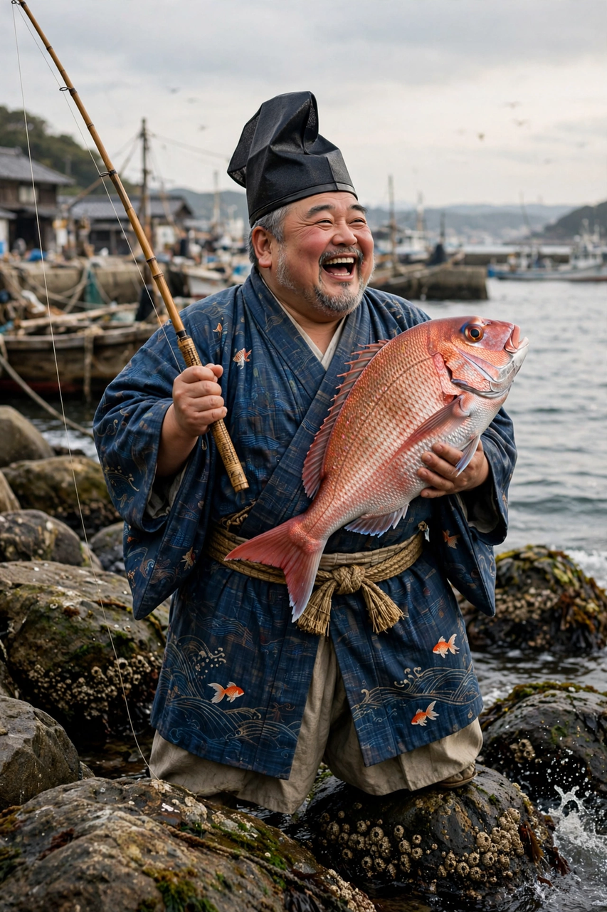

From Wikipedia, the free encyclopedia
| Ebisu | |
|---|---|
| Affiliation | Shinto; god of fishermen, luck and honest commerce |
| Depicted as | A jolly, plump fisherman with a fishing rod and a great sea bream (tai) under his arm |
| Group | One of the Seven Lucky Gods — the only one of purely Japanese origin |
| Festivals | Toka Ebisu (January), Osaka's Imamiya Ebisu shrine |

Ebisu (Japanese: 恵比寿) is the Japanese god of fishermen, good luck and honest trade — a laughing, plump figure in a tall folded hat, fishing rod in one hand and an enormous red sea bream (tai, a pun on medetai, "auspicious") under the other arm. He is the only one of the Seven Lucky Gods of purely Japanese origin, the others having arrived from India and China, and his cult is the friendliest in Shinto: thousands of Ebisu shrines serve fishing ports and merchant quarters, and his January festival at Osaka's Imamiya Ebisu shrine draws a million visitors who buy lucky bamboo branches hung with charms.
Ebisu's origin is darker than his smile. He is widely identified with Hiruko, the "leech child" — the first, malformed offspring of Izanagi and Izanami, born without bones (their union ritually flawed), whom his parents set adrift in a boat of reeds. Washed ashore and cared for — in the Awaji tradition by the god Ebisu Saburo — the castaway survived to become the god of those who live by the sea's chance: of things that drift in, of strangers welcomed, of the bounty that arrives from outside. The identification explains his other great domain, the marebito — the visiting god from over the water — and the hospitality owed to what the tide delivers. That Ebisu is deaf, cheerfully unbothered by being called, is a piece of folklore every merchant repeats: he comes when he comes.